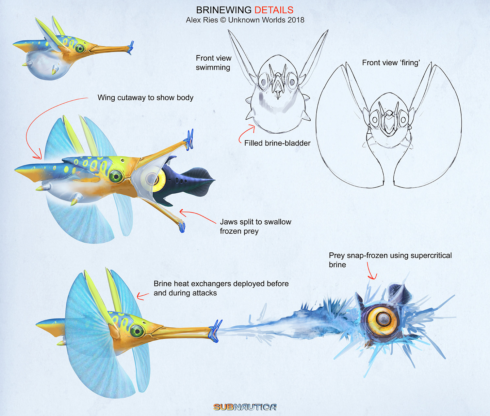
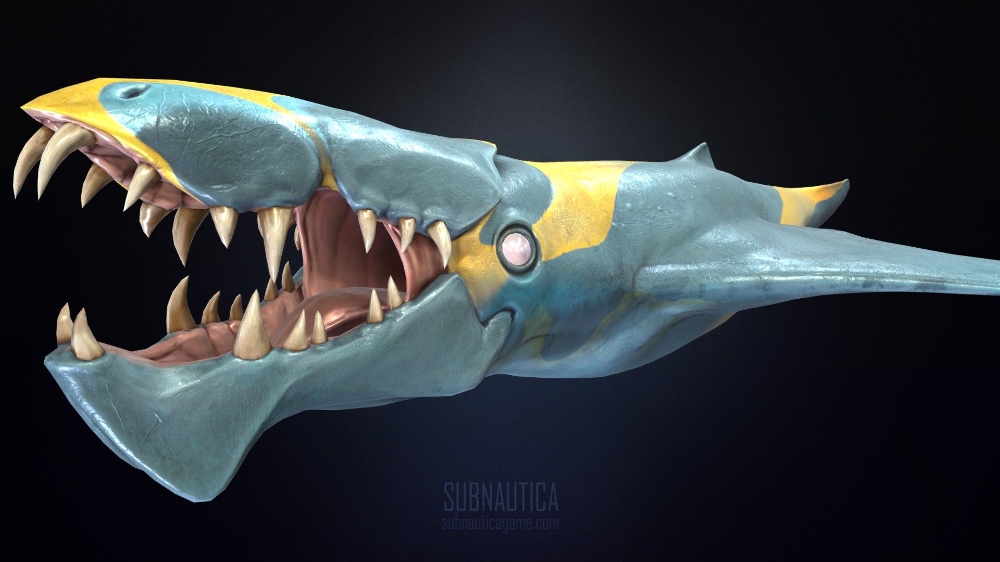
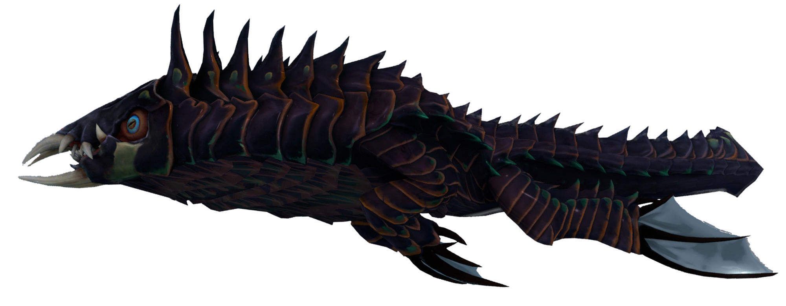
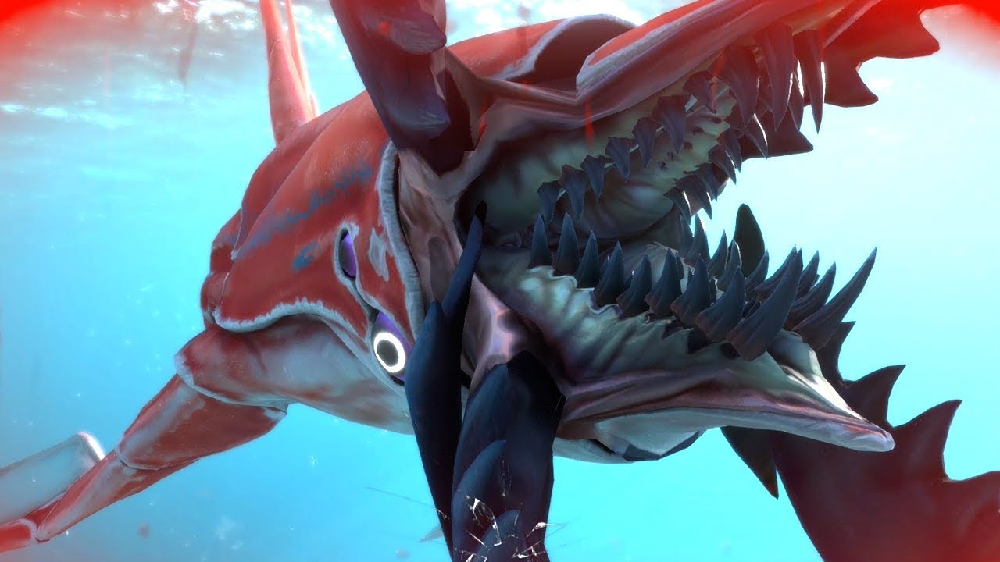
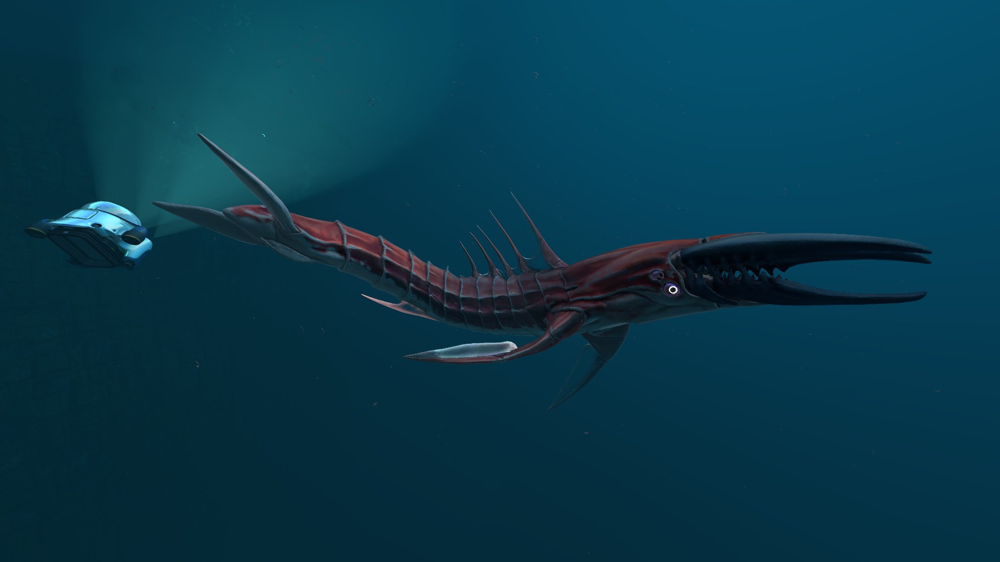

Рассолокрыл (Brinewing)
Способен создавать переохлажденный соляной раствор, который замораживает добычу.
Злобная акула(?) (Brute shark)
Агрессивная акула средних размеров.
Кальмаро-акула (Squid-shark)
За мягкими ротовыми щупальцами этого хищника скрывается рот с длинными, острыми зубами.

Криптозух (Cryptosuchus)
Агрессивное существо схожее по повадкам с Костяной акулой
Хелицерат (Chelicerate)
Беспозвоночный левиафан, обитающий около источников тепла.
 Ледяной червь (Ice worm)
Живёт в ледяных туннелях. Его привлекают источники тепла и шума. Атакует из под льда.

Теневой левиафан (Shadow Leviathan)
Яростный хищник на верхушке пищевой цепи.